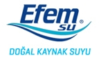
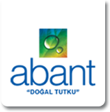
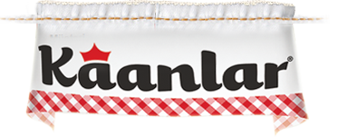
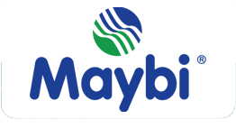
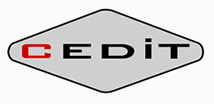

Toggle navigation
Ana Sayfa
Hakkımızda
Ne İş Yapıyoruz
Kimler Var
Referanslar
Haberler
Bize Ulaşın
İletişim
Harita
Ürünler
Proses Birimleri
CIP Sistemleri
Pastörizatörler
Hamsu Kalite Analizi
Krema Standardizatörü
Proses Otomasyonu
SCADA Sistemleri
Vana Tarlası
Üretim İzleme ve Raporlama
Ürün Depolama ve Dağıtım
English
REFERANSLARIMIZ

Komple Fabrika Otomasyonu
Hamsu Kalite Kontrol
Manevra Odaları
SCADA veri toplama
Şurup Pastörizatörü
Soğuk CIP Sistemi
Mekanik Montajlar ve Borulama

Komple Fabrika Otomasyonu
Hamsu Kalite Kontrol
SCADA veri toplama
Soğuk CIP Sistemi
Dolum Makinalarına ürün dağıtımı
Filtre ve Ozon Sistemleri ile senkronizasyon
Pompa Grupları Otomasyonu ve Pompaları Eş Yaşlandırma
Mekanik Montajlar ve Borulama

Salamura Hazırlama Bölümü
Salamura Hazırlama Hatları
Salamura Konsantrasyon Tesbiti
Mixproof Vana Tarlası
Salamura Pastörizatörü
Salamura Dağıtım ve Toplama Hatları
SCADA Veri Toplama (SQL Server)
Üretim Raporlama
Merkezi CIP Sistemi
Bakım İçin Vanaların Açma-Kapama Sayısı ve Pompaların Çalışma Saatlerinin Kayıt Altına Alınması
Mekanik Montajlar ve Borulama
Üretim Birim Otomasyonları
Bal, Reçel, Banada Ürünleri Dolum Öncesi Hazırlama ve Gönderim Hat Ototmasyonu
Kapama Makinalarına Salamura Dağıtım Hatları Otomasyonu ve Merkezi CIP Sistemine Entegrasyonu

Üretim Birim Otomasyonları
Yoğurt Dolum Makinası Devreye Alım
Torba Süt Tozu Dolum Makinası Devreye Alım
4 Hatlı Merkezi CIP Sistemi Otomasyonu
Sistem Tasarımı ve Süpervizyon
SCADA Üzerinden Kontrol ve Veri Toplama
Raporlamalar
Sahadaki Dolum ve Proses Sistemleri ile Sinyalleşmeler (Dijital veya network üzerinden)
Dolum Makinasına Özel Temizlik Rutinleri Yazılması
Üretim Birim Otomasyonları
Yoğurt Dolum Makinası Devreye Alım

Makina Otomasyonları
Deiğişik İplik Fikse Makinaları Otomasyon ve Devreye Alım
Yumurta Pastörizatörü
2500 lt/h Kpasiteli Bütün Sıvı Yumurta Pastörizatörü
SCADA Veri Toplama ve Raporlama Yazılımları (SQL Server)